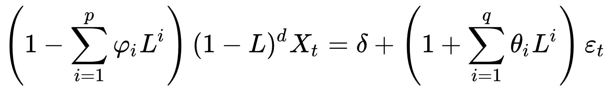

Every spacecraft that is launched has some form of onboard anomaly responses for most known failure cases in order to safe the vehicle. Normally these are simple low/high limits set for certain monitors (temperature, voltage, etc) with a corresponding response, whether that be a simple visual alarm or powering off certain equipment.
The problem with anomalies in space is that they can be incredibly hard to predict, as multiple components can react slightly out of family to create a larger issue. Spacecraft will also generate a massive amount of data the longer they are on orbit, and manually looking and trending this data from a human standpoint can miss certain anomalies. But, this large amount of data makes them perfect for utilizing machine learning. Machine learning would allow for these anomalies to not only be identified, but also potentially predicted and prevented, allowing the spacecraft to stay in mission over potentially high priority targets (depending on the payload/mission). An automatic response to a predicted anomaly would limit both downtime and human interaction, as the investigation and implementation can take hours to days before returning to mission.
Example of anomaly in telemetry data
Data Setup & Preprocessing
Preprocessing
Many spacecraft constellations have decades of on orbit telemetry available, but is mostly proprietary and not available for public use. LASP and NASA releases subsets of data to the public, and this is what was used for this blog post. Reaction wheel temperatures, battery temperatures and voltages, and total bus current datasets were used, each having 750,000+ samples of data over ~14.5 years. Because ARIMA requires the data to be stationary, each of the datasets is first sampled down to a daily mean which brings the size down to only 5346 data points. This will allow for much faster processing. To increase the number of exogenous features, each dataset is also turned into sets of rolling mean and rolling standard deviation in windows of 3, 7, and 30 days.
Unfold the below code to see the setup of the data and how it is preprocessed as mentioned above.
A visualization of the separation between training and test data can be seen in in Figure 1, with the first 75% used for training and the remaining 25% used for test data.
Figure 1: Training data is first 75% of wheel temperature data, with the remaining 25% used as the test data for verification
Truth Data
In order to determine the accuracy of the anomaly detection methods used below, a set of truth data points needed to be manually chosen. These points were identified to be points in time where an anomaly took place based on personal experience of operational spacecraft data. 115 out of 1137 total points were marked as anomalous. Figure 2 identifies the anomalies, marked in red.
Figure 2: Set of anomalous data points to be used as truth
ARIMA Model
The first step in accurately identifying anomalies with telemetry data is to forecast future data. The ARIMA model is a statistical based model that is specifically made and used for forecasting time series data. Many machine learning algorithms struggle with time series data and are prone to overfitting, so ARIMA is a great option for analyzing spacecraft telemetry data.
ARIMA works best with data that is stationary, meaning that most input data will need to be differenced before running the model. This was accomplished in the preprocessing stage above, but the auto_arima function will still perform an Augmented Dickey-Fuller (ADF) test to check for stationary data by looking if a unit root is present in the data.
There are 3 hyperparameters that are used as input for the auto_arima function (with 3 more parameters if seasonal modeling is desired). These parameters are used to optimize the below equation. Auto_arima will iterate through multiple variations of each parameter to find the best combination with the lowest prediction error (Akaike Information Criteria or AIC).

Where:
p = order of auto-regressive model
d = order of first-differencing
q = order of moving-average model
from pmdarima import auto_arimafrom sklearn.metrics import mean_absolute_errormodel = auto_arima( df_train["High"], exogenous=df_train[exogenous_features], trace=True, error_action="ignore", suppress_warnings=True, seasonal=True, m=1)model.fit(df_train.High, exogenous=df_train[exogenous_features])forecast = model.predict(n_periods=len(df_valid), exogenous=df_valid[exogenous_features])df_valid.insert(len(df_valid.columns),"Forecast_ARIMAX",forecast,True)print("\nRMSE of Auto ARIMAX:", np.sqrt(mean_squared_error(df_valid.High, df_valid.Forecast_ARIMAX)))print("\nMAE of Auto ARIMAX:", mean_absolute_error(df_valid.High, df_valid.Forecast_ARIMAX))
It can be seen that the auto_arima function performed fairly quickly, finding an optimal model in less than 6 minutes with an RMSE of 0.614 and MAE of 0.263. A visual representation of the ARIMA forecast compared to the actual telemetry data can be seen in Figure 3
Figure 3: Initial ARIMA forecast on reaction wheel temperature data
OCSVM
One class support vector machine algorithm is an unsupervised machine learning method that maps samples of a higher dimensional subspace and finds a hyperplane separating one-class samples from the origin. This splits the data into both positive and negative classes and tries to minimize the volume of training data in the positive class. In the below example, a two dimensional space is seen to be split by a one dimensional hyperplane, with the distance from the origin maximized. Through this process outliers are identified and flagged.
Advantages:
Highly efficient
Requires few hyperparameters from the user
Eliminated the need for labelled two-class information during training
Inputs:
nu (upper bound on fraction of errors, used 0.05)
kernel (type of function for kernel method, used poly)
In order to compare OCSVM against something to prove it’s worth in anomaly detection, an additional method was chosen. Isolation Forest is a commonly used outlier detection method which detects outliers utilizing binary trees. This method recursively partitions data points based on randomly selected attribute and then assigned anomaly scores based on number of “splits” needed to isolate a data point. The training dataset is used to build the “trees” and then the validation data is passed through those trees and assigned an anomaly score. Based on the anomaly score, it can be determined which points are outliers.
Advantages:
Low memory utilization
Works best with large datasets
Example of binary trees used to identify outliers via Isolation Forest
As seen from the above plots for OCSVM and Isolation Forest, both methods identified anomalous points to some degree of success, but OCSVM identified multiple sections. When comparing to the truth anomalies, and calculating common metrics (F1, recall, precision, and FPR), the below table shows that OCSVM performed multiple times better than Isolation Forest, with similar precision and FPR. The confusion matrices for both OCSVM (Figure 4) and Isolation Forest (Figure 5) can be seen below.
Figure 5: Confusion matrix for Isolation Forest method
Source Code
---title: "(Old blog post) Anomaly Detection on Spacecraft Telemetry"author: "Eric Jackson"date: "2023-09-03"categories: [code, analysis]image: "image.jpg"toc: truetoc-depth: 2---# BackgroundEvery spacecraft that is launched has some form of onboard anomaly responses for most known failure cases in order to safe the vehicle. Normally these are simple low/high limits set for certain monitors (temperature, voltage, etc) with a corresponding response, whether that be a simple visual alarm or powering off certain equipment.The problem with anomalies in space is that they can be incredibly hard to predict, as multiple components can react slightly out of family to create a larger issue. Spacecraft will also generate a massive amount of data the longer they are on orbit, and manually looking and trending this data from a human standpoint can miss certain anomalies. But, this large amount of data makes them perfect for utilizing machine learning. Machine learning would allow for these anomalies to not only be identified, but also potentially predicted and prevented, allowing the spacecraft to stay in mission over potentially high priority targets (depending on the payload/mission). An automatic response to a predicted anomaly would limit both downtime and human interaction, as the investigation and implementation can take hours to days before returning to mission.{width="636"}# Data Setup & Preprocessing## PreprocessingMany spacecraft constellations have decades of on orbit telemetry available, but is mostly proprietary and not available for public use. LASP and NASA releases subsets of data to the public, and this is what was used for this blog post. Reaction wheel temperatures, battery temperatures and voltages, and total bus current datasets were used, each having 750,000+ samples of data over \~14.5 years. Because ARIMA requires the data to be stationary, each of the datasets is first sampled down to a daily mean which brings the size down to only 5346 data points. This will allow for much faster processing. To increase the number of exogenous features, each dataset is also turned into sets of rolling mean and rolling standard deviation in windows of 3, 7, and 30 days.Unfold the below code to see the setup of the data and how it is preprocessed as mentioned above.A visualization of the separation between training and test data can be seen in in @fig-arima2, with the first 75% used for training and the remaining 25% used for test data.```{python}#| code-fold: trueimport osimport datetimefrom math import sqrtimport pandas as pdimport numpy as npfrom matplotlib import pyplotfrom statsmodels.tsa.arima_model import ARIMAfrom statsmodels.tsa.statespace.sarimax import SARIMAXfrom statsmodels.tsa.stattools import acf, pacffrom statsmodels.tsa.stattools import adfullerfrom statsmodels.tsa.seasonal import seasonal_decomposefrom statsmodels.tsa.arima_model import ARIMAResultsfrom sklearn.metrics import mean_squared_errorimport sklearn.svm as svmimport matplotlib.pyplot as pltimport mathimport warningswarnings.filterwarnings('ignore', '[\s\w\W]*non-unique[\s\w\W]*', DeprecationWarning)df=pd.read_csv('./WheelTemperature.csv')df_battemp=pd.read_csv('./BatteryTemperature.csv')df_buscurrent=pd.read_csv('./TotalBusCurrent.csv')df_busvolt=pd.read_csv('./BusVoltage.csv')df_battemp.Date = pd.to_datetime(df_battemp.Date, format="%m/%d/%Y %H:%M")df_buscurrent.Date = pd.to_datetime(df_buscurrent.Date, format="%m/%d/%Y")df_busvolt.Date=pd.to_datetime(df_busvolt.Date, format="%m/%d/%Y %H:%M")df.Date = pd.to_datetime(df.Date, format="%m/%d/%Y %H:%M")df_battemp=df_battemp.resample('1D',on='Date').mean()df_buscurrent=df_buscurrent.resample('1D',on='Date').mean()df_busvolt=df_busvolt.resample('1D',on='Date').mean()df_busvolt=df_busvolt.loc['2004-02-13':]df=df.resample('1D',on='Date').mean()df=pd.concat([df,df_battemp,df_buscurrent,df_busvolt],axis=1)df['Date']=df.indexlag_features = ["High", "Low", "Volume", "Turnover", "NumTrades"]lag_features=["High","Temp","Current","Voltage"]window1 =3window2 =7window3 =30df_rolled_3d = df[lag_features].rolling(window=window1, min_periods=0)df_rolled_7d = df[lag_features].rolling(window=window2, min_periods=0)df_rolled_30d = df[lag_features].rolling(window=window3, min_periods=0)df_mean_3d = df_rolled_3d.mean().shift(1).reset_index()df_mean_7d = df_rolled_7d.mean().shift(1).reset_index()df_mean_30d = df_rolled_30d.mean().shift(1).reset_index()df_std_3d = df_rolled_3d.std().shift(1).reset_index()df_std_7d = df_rolled_7d.std().shift(1).reset_index()df_std_30d = df_rolled_30d.std().shift(1).reset_index()df_mean_3d.set_index("Date", drop=True, inplace=True)df_mean_7d.set_index("Date", drop=True, inplace=True)df_mean_30d.set_index("Date", drop=True, inplace=True)df_std_3d.set_index("Date", drop=True, inplace=True)df_std_7d.set_index("Date", drop=True, inplace=True)df_std_30d.set_index("Date", drop=True, inplace=True)for feature in lag_features: df[f"{feature}_mean_lag{window1}"] = df_mean_3d[feature] df[f"{feature}_mean_lag{window2}"] = df_mean_7d[feature] df[f"{feature}_mean_lag{window3}"] = df_mean_30d[feature] df[f"{feature}_std_lag{window1}"] = df_std_3d[feature] df[f"{feature}_std_lag{window2}"] = df_std_7d[feature] df[f"{feature}_std_lag{window3}"] = df_std_30d[feature]df.Date = pd.to_datetime(df.Date, format="%m/%d/%Y %H:%M")df["month"] = df.Date.dt.monthdf["week"] = df.Date.dt.isocalendar().week.astype(np.int64)df["day"] = df.Date.dt.daydf["day_of_week"] = df.Date.dt.dayofweekdf.set_index("Date", drop=True, inplace=True)df.fillna(df.mean(), inplace=True)data=dfdata.index = pd.to_datetime(data.index)data=data.resample('1D').mean()df_train=data.iloc[0:math.floor(len(data)*.75),:]df_valid=data.iloc[math.floor(len(data)*.75):,:]exogenous_features=['High_mean_lag3', 'High_mean_lag7','High_mean_lag30', 'High_std_lag3', 'High_std_lag7', 'High_std_lag30','Temp_mean_lag3', 'Temp_mean_lag7', 'Temp_mean_lag30', 'Temp_std_lag3','Temp_std_lag7', 'Temp_std_lag30', 'Current_mean_lag3','Current_mean_lag7', 'Current_mean_lag30', 'Current_std_lag3','Current_std_lag7', 'Current_std_lag30', 'Voltage_mean_lag3','Voltage_mean_lag7', 'Voltage_mean_lag30', 'Voltage_std_lag3','Voltage_std_lag7', 'Voltage_std_lag30', 'month', 'week', 'day','day_of_week']``````{python}#| echo: False #| label: fig-arima2#| fig-cap: "Training data is first 75% of wheel temperature data, with the remaining 25% used as the test data for verification"fig, ax = plt.subplots(figsize=(9,6))plt.plot(df_train["High"])plt.plot(df_valid["High"])plt.legend(['Training Data','Test Data'],loc='best')plt.ylabel('Temperature (C)')plt.show()```## Truth DataIn order to determine the accuracy of the anomaly detection methods used below, a set of truth data points needed to be manually chosen. These points were identified to be points in time where an anomaly took place based on personal experience of operational spacecraft data. 115 out of 1137 total points were marked as anomalous. @fig-truth identifies the anomalies, marked in red.```{python}#| code-fold: true#| label: fig-truth#| fig-cap: "Set of anomalous data points to be used as truth"df_truth=pd.read_csv('./truth.csv')df_truth.Date = pd.to_datetime(df_truth.Date, format="%m/%d/%Y")df_truth.set_index("Date", drop=True, inplace=True)anom=df_truth['Anom']anom=anom.map(lambda val:1if val==-1else0)a=df_truth.loc[df_truth['Anom']==1,['High']]fig, ax = plt.subplots(figsize=(9,6))ax.plot(df_truth.index,df_truth['High'], color='black', label ='ARIMA')ax.scatter(a.index,a.values, color='red', label ='Anomaly')plt.legend(['Wheel Temperature','Anomaly'])plt.ylabel('Temperature (C)')plt.title('Truth Anomalies')plt.show()```# ARIMA ModelThe first step in accurately identifying anomalies with telemetry data is to forecast future data. The ARIMA model is a statistical based model that is specifically made and used for forecasting time series data. Many machine learning algorithms struggle with time series data and are prone to overfitting, so ARIMA is a great option for analyzing spacecraft telemetry data.ARIMA works best with data that is stationary, meaning that most input data will need to be differenced before running the model. This was accomplished in the preprocessing stage above, but the auto_arima function will still perform an Augmented Dickey-Fuller (ADF) test to check for stationary data by looking if a unit root is present in the data.There are 3 hyperparameters that are used as input for the auto_arima function (with 3 more parameters if seasonal modeling is desired). These parameters are used to optimize the below equation. Auto_arima will iterate through multiple variations of each parameter to find the best combination with the lowest prediction error (Akaike Information Criteria or AIC).{width="406"}Where:- p = order of auto-regressive model- d = order of first-differencing- q = order of moving-average model```{python}from pmdarima import auto_arimafrom sklearn.metrics import mean_absolute_errormodel = auto_arima( df_train["High"], exogenous=df_train[exogenous_features], trace=True, error_action="ignore", suppress_warnings=True, seasonal=True, m=1)model.fit(df_train.High, exogenous=df_train[exogenous_features])forecast = model.predict(n_periods=len(df_valid), exogenous=df_valid[exogenous_features])df_valid.insert(len(df_valid.columns),"Forecast_ARIMAX",forecast,True)print("\nRMSE of Auto ARIMAX:", np.sqrt(mean_squared_error(df_valid.High, df_valid.Forecast_ARIMAX)))print("\nMAE of Auto ARIMAX:", mean_absolute_error(df_valid.High, df_valid.Forecast_ARIMAX))```It can be seen that the auto_arima function performed fairly quickly, finding an optimal model in less than 6 minutes with an RMSE of 0.614 and MAE of 0.263. A visual representation of the ARIMA forecast compared to the actual telemetry data can be seen in @fig-arima```{python}#| echo: False #| fig-width: 30%#| label: fig-arima#| fig-cap: "Initial ARIMA forecast on reaction wheel temperature data"df_valid[["High", "Forecast_ARIMAX"]].plot(figsize=(9, 5))plt.legend(['Wheel Temperature (Truth)','Forecast (ARIMA)'])plt.show()```# OCSVMOne class support vector machine algorithm is an unsupervised machine learning method that maps samples of a higher dimensional subspace and finds a hyperplane separating one-class samples from the origin. This splits the data into both positive and negative classes and tries to minimize the volume of training data in the positive class. In the below example, a two dimensional space is seen to be split by a one dimensional hyperplane, with the distance from the origin maximized. Through this process outliers are identified and flagged.Advantages:- Highly efficient- Requires few hyperparameters from the user- Eliminated the need for labelled two-class information during trainingInputs:- nu (upper bound on fraction of errors, used 0.05)- kernel (type of function for kernel method, used poly)[{width="408"}](https://www.researchgate.net/publication/362912442_Anomaly_Detection_in_Satellite_Telemetry_Data_Using_a_Sparse_Feature-Based_Method/figures?lo=1)```{python}############# OCSVM ##################fig, ax = plt.subplots(figsize=(9,6))data2=df_valid["Forecast_ARIMAX"]model =svm.OneClassSVM(nu=0.05,kernel='poly')model.fit(data2.values.reshape(-1,1))anom=(pd.Series(model.predict(data2.values.reshape(-1,1))))df2=pd.DataFrame()df2['Time']=data2.indexdf2['data']=data2.valuesdf2['anom']=anoma=df2.loc[df2['anom']==-1,['Time','data']]df2.set_index("Time", drop=True, inplace=True)ax.plot(df2.index, df2['data'], color='black', label ='ARIMA')ax.scatter(a['Time'].values,a['data'], color='red', label ='Anomaly')plt.legend(['Wheel Temperature','Anomaly'])plt.ylabel('Temperature (C)')plt.title('Anomalies detected with OCSVM')plt.show()```# Isolation ForestIn order to compare OCSVM against something to prove it's worth in anomaly detection, an additional method was chosen. Isolation Forest is a commonly used outlier detection method which detects outliers utilizing binary trees. This method recursively partitions data points based on randomly selected attribute and then assigned anomaly scores based on number of "splits" needed to isolate a data point. The training dataset is used to build the "trees" and then the validation data is passed through those trees and assigned an anomaly score. Based on the anomaly score, it can be determined which points are outliers.Advantages:- Low memory utilization- Works best with large datasets```{python}######### Isolation Forest ################import sklearnfrom sklearn.ensemble import IsolationForestisofor=df_validoutliers_fraction =float(.01)scaler = sklearn.preprocessing.StandardScaler()np_scaled = scaler.fit_transform(isofor['Forecast_ARIMAX'].values.reshape(-1, 1))data = pd.DataFrame(np_scaled)# train isolation forestmodel = IsolationForest(contamination=outliers_fraction)model.fit(data)isofor['anomaly'] = model.predict(data)# visualizationfig, ax = plt.subplots(figsize=(9,6))a = isofor.loc[isofor['anomaly'] ==-1, ['Forecast_ARIMAX']] #anomalyax.plot(isofor.index, isofor['Forecast_ARIMAX'], color='black', label ='Normal')ax.scatter(a.index,a['Forecast_ARIMAX'], color='red', label ='Anomaly')plt.legend(['Wheel Temperature','Anomaly'])plt.ylabel('Temperature (C)')plt.title('Anomalies detected with Isolation Forest')plt.show()```# Final ResultsAs seen from the above plots for OCSVM and Isolation Forest, both methods identified anomalous points to some degree of success, but OCSVM identified multiple sections. When comparing to the truth anomalies, and calculating common metrics (F1, recall, precision, and FPR), the below table shows that OCSVM performed multiple times better than Isolation Forest, with similar precision and FPR. The confusion matrices for both OCSVM (@fig-cm1) and Isolation Forest (@fig-cm2) can be seen below.```{python}#| code-fold: true######################### calculate statistics ###########################from sklearn.metrics import f1_score,recall_score,precision_scorefrom sklearn.metrics import mean_squared_errorfrom tabulate import tabulatefrom collections import OrderedDictfrom sklearn.metrics import precision_recall_curvefrom sklearn.metrics import ConfusionMatrixDisplayfrom sklearn.metrics import confusion_matrixfrom numpy import arraydef perf_measure(y_actual, y_hat): TP =0 FP =0 TN =0 FN =0for i inrange(len(y_hat)): if y_actual[i]==y_hat[i]==1: TP +=1if y_hat[i]==1and y_actual[i]!=y_hat[i]: FP +=1if y_actual[i]==y_hat[i]==0: TN +=1if y_hat[i]==0and y_actual[i]!=y_hat[i]: FN +=1return(TP, FP, TN, FN)``````{python}#| code-fold: truedf_truth=pd.read_csv('./truth.csv')anom=anom.map(lambda val:1if val==-1else0)#calculate F1 scoref1=f1_score(df_truth['Anom'].values, anom.values)rec=recall_score(df_truth['Anom'].values, anom.values)prec=precision_score(df_truth['Anom'].values, anom.values)TP, FP, TN, FN=perf_measure(df_truth['Anom'].values, anom.values)fpr=FP/(TN+FP)final=OrderedDict()final['OCSVM']=[f1,rec,prec,fpr]a2=isofor['anomaly']a2=a2.map(lambda val:1if val==-1else0)f1=f1_score(df_truth['Anom'].values, a2.values)rec=recall_score(df_truth['Anom'].values, a2.values)prec=precision_score(df_truth['Anom'].values, a2.values)TP, FP, TN, FN=perf_measure(df_truth['Anom'].values, a2.values)fpr=FP/(TN+FP)final['IsoFor']=[f1,rec,prec,fpr]df=pd.DataFrame(final)df.index=['F1','Recall','Precision','FPR']print(tabulate(df, headers='keys', tablefmt='psql'))``````{python}#| echo: False #| fig-width: 30%#| label: fig-cm1#| fig-cap: "Confusion matrix for OCSVM method"cm=confusion_matrix(df_truth['Anom'].values,anom.values)cmd=ConfusionMatrixDisplay(cm)cmd.plot()plt.show()``````{python}#| echo: False #| fig-width: 30%#| label: fig-cm2#| fig-cap: "Confusion matrix for Isolation Forest method"cm=confusion_matrix(df_truth['Anom'].values,a2.values)cmd=ConfusionMatrixDisplay(cm)cmd.plot()plt.show()```